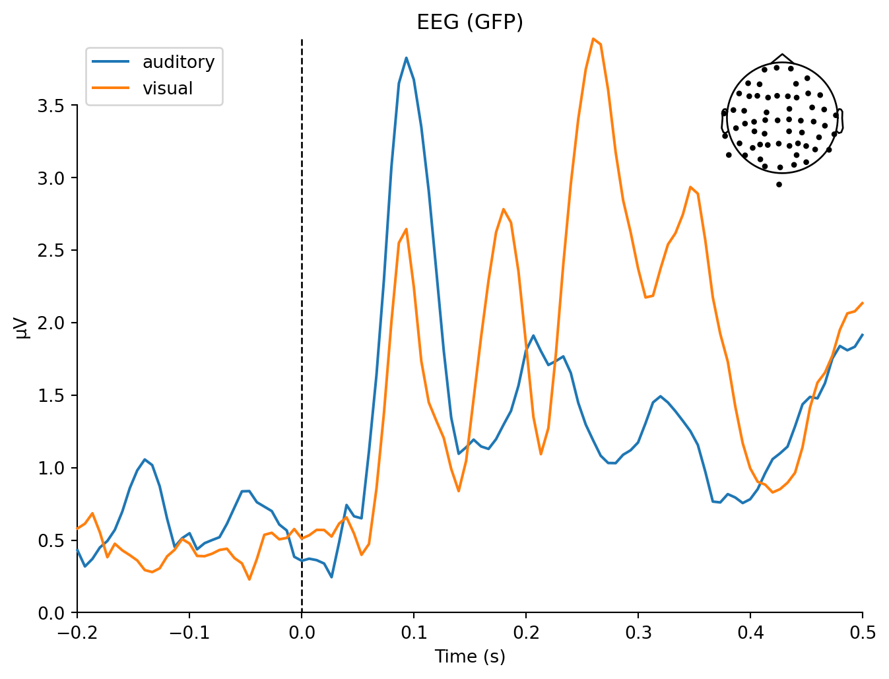

<Info | 15 non-empty values
bads: 2 items (MEG 2443, EEG 053)
ch_names: MEG 0113, MEG 0112, MEG 0111, MEG 0122, MEG 0123, MEG 0121, MEG ...
chs: 204 Gradiometers, 102 Magnetometers, 9 Stimulus, 60 EEG, 1 EOG
custom_ref_applied: False
dev_head_t: MEG device -> head transform
dig: 146 items (3 Cardinal, 4 HPI, 61 EEG, 78 Extra)
file_id: 4 items (dict)
highpass: 0.1 Hz
hpi_meas: 1 item (list)
hpi_results: 1 item (list)
lowpass: 40.0 Hz
meas_date: 2002-12-03 19:01:10 UTC
meas_id: 4 items (dict)
nchan: 376
projs: PCA-v1: off, PCA-v2: off, PCA-v3: off, Average EEG reference: off
sfreq: 150.2 Hz
>MNE-Python
MNE-Python Tutorials
- Alexandre Gramfort, Martin Luessi, Eric Larson, Denis A. Engemann, Daniel Strohmeier, Christian Brodbeck, Roman Goj, Mainak Jas, Teon Brooks, Lauri Parkkonen, and Matti S. Hämäläinen. MEG and EEG data analysis with MNE-Python. Frontiers in Neuroscience, 7(267):1–13, 2013. doi:10.3389/fnins.2013.00267.
MNE-Python: Introductory Tutorials
Overview: Setup and Load Data
import os
import numpy as np
import mne
sample_data_folder = mne.datasets.sample.data_path()
sample_data_raw_file = os.path.join(sample_data_folder, 'MEG', 'sample',
'sample_audvis_filt-0-40_raw.fif')
raw = mne.io.read_raw_fif(sample_data_raw_file)
print(raw)Opening raw data file /Users/mears/mne_data/MNE-sample-data/MEG/sample/sample_audvis_filt-0-40_raw.fif... Read a total of 4 projection items: PCA-v1 (1 x 102) idle PCA-v2 (1 x 102) idle PCA-v3 (1 x 102) idle Average EEG reference (1 x 60) idle Range : 6450 ... 48149 = 42.956 ... 320.665 secsReady.<Raw | sample_audvis_filt-0-40_raw.fif, 376 x 41700 (277.7 s), ~3.3 MB, data not loaded>
Overview: Raw Data Class
Overview
Overview: Detecting experimental events
319 events foundEvent IDs: [ 1 2 3 4 5 32][[ 6994 0 2]
[ 7086 0 3]
[ 7192 0 1]
[ 7304 0 4]
[ 7413 0 2]
[ 7506 0 3]
[ 7612 0 1]
[ 7709 0 4]
[ 7810 0 2]
[ 7916 0 3]
[ 8025 0 1]
[ 8129 0 4]
[ 8233 0 2]
[ 8331 0 3]
[ 8428 0 1]
[ 8522 0 5]
[ 8633 0 2]
[ 8662 0 32]
[ 8739 0 3]
[ 8857 0 1]
[ 8962 0 4]
[ 9052 0 2]
[ 9144 0 3]
[ 9251 0 1]
[ 9365 0 4]
[ 9477 0 2]
[ 9581 0 3]
[ 9677 0 1]
[ 9782 0 4]
[ 9890 0 2]
[ 9981 0 3]
[10101 0 1]
[10220 0 4]
[10315 0 2]
[10411 0 3]
[10531 0 1]
[10649 0 5]
[10734 0 32]
[10740 0 2]
[10836 0 3]
[10945 0 1]
[11042 0 4]
[11162 0 2]
[11278 0 3]
[11371 0 1]
[11465 0 4]
[11560 0 2]
[11671 0 3]
[11773 0 1]
[11882 0 4]
[11973 0 2]
[12071 0 3]
[12180 0 1]
[12275 0 4]
[12367 0 2]
[12474 0 3]
[12567 0 1]
[12670 0 4]
[12761 0 2]
[12859 0 5]
[12950 0 32]
[12970 0 1]
[13063 0 4]
[13168 0 2]
[13279 0 3]
[13373 0 1]
[13478 0 4]
[13580 0 2]
[13674 0 3]
[13775 0 1]
[13865 0 4]
[13969 0 2]
[14067 0 3]
[14179 0 1]
[14295 0 4]
[14403 0 2]
[14519 0 3]
[14612 0 1]
[14728 0 4]
[14830 0 5]
[14919 0 32]
[14934 0 3]
[15032 0 1]
[15140 0 4]
[15258 0 2]
[15364 0 3]
[15467 0 1]
[15570 0 4]
[15670 0 2]
[15767 0 3]
[15883 0 1]
[15980 0 4]
[16096 0 2]
[16192 0 3]
[16295 0 1]
[16410 0 4]
[16517 0 2]
[16634 0 3]
[16741 0 1]
[16850 0 5]
[16945 0 32]
[16952 0 2]
[17049 0 3]
[17166 0 1]
[17265 0 4]
[17364 0 2]
[17464 0 3]
[17564 0 1]
[17665 0 4]
[17782 0 2]
[17902 0 3]
[17997 0 1]
[18110 0 4]
[18206 0 2]
[18314 0 3]
[18429 0 1]
[18543 0 4]
[18635 0 2]
[18729 0 3]
[18826 0 5]
[18906 0 32]
[18931 0 4]
[19021 0 2]
[19119 0 3]
[19223 0 1]
[19326 0 4]
[19420 0 2]
[19532 0 3]
[19634 0 1]
[19733 0 4]
[19840 0 2]
[19954 0 3]
[20052 0 1]
[20156 0 4]
[20254 0 2]
[20360 0 3]
[20477 0 1]
[20583 0 4]
[20678 0 2]
[20787 0 3]
[20892 0 1]
[20996 0 4]
[21111 0 2]
[21224 0 5]
[21277 0 32]
[21324 0 1]
[21416 0 4]
[21526 0 2]
[21630 0 3]
[21742 0 1]
[21838 0 4]
[21931 0 2]
[22037 0 3]
[22148 0 1]
[22256 0 4]
[22374 0 2]
[22487 0 3]
[22604 0 1]
[22703 0 4]
[22798 0 2]
[22900 0 3]
[23009 0 1]
[23103 0 4]
[23200 0 5]
[23254 0 32]
[23317 0 3]
[23417 0 1]
[23523 0 4]
[23635 0 2]
[23740 0 3]
[23858 0 1]
[23970 0 4]
[24082 0 2]
[24197 0 3]
[24308 0 1]
[24425 0 4]
[24528 0 2]
[24624 0 3]
[24725 0 1]
[24840 0 4]
[24948 0 2]
[25039 0 3]
[25155 0 1]
[25272 0 5]
[25367 0 2]
[25385 0 32]
[25477 0 3]
[25572 0 1]
[25678 0 4]
[25798 0 2]
[25897 0 3]
[26008 0 1]
[26108 0 4]
[26227 0 2]
[26337 0 3]
[26440 0 1]
[26543 0 4]
[26655 0 2]
[26747 0 3]
[26838 0 1]
[26935 0 4]
[27042 0 2]
[27154 0 3]
[27243 0 5]
[27331 0 32]
[27341 0 4]
[27435 0 2]
[27552 0 3]
[27643 0 1]
[27751 0 4]
[27860 0 2]
[27959 0 3]
[28073 0 1]
[28185 0 4]
[28285 0 2]
[28397 0 3]
[28488 0 1]
[28581 0 4]
[28685 0 2]
[28790 0 3]
[28904 0 1]
[29020 0 4]
[29131 0 2]
[29232 0 3]
[29326 0 1]
[29428 0 4]
[29525 0 5]
[29592 0 32]
[29620 0 3]
[29719 0 1]
[29808 0 4]
[29924 0 2]
[30027 0 3]
[30134 0 1]
[30246 0 4]
[30348 0 2]
[30450 0 3]
[30554 0 1]
[30671 0 4]
[30766 0 2]
[30862 0 3]
[30982 0 1]
[31101 0 4]
[31207 0 2]
[31325 0 3]
[31427 0 1]
[31530 0 5]
[31617 0 32]
[31636 0 2]
[31737 0 3]
[31832 0 1]
[31926 0 4]
[32018 0 2]
[32127 0 3]
[32231 0 1]
[32321 0 4]
[32433 0 2]
[32527 0 3]
[32623 0 1]
[32719 0 4]
[32813 0 2]
[32918 0 3]
[33020 0 1]
[33139 0 4]
[33243 0 2]
[33362 0 3]
[33481 0 5]
[33571 0 32]
[33579 0 4]
[33682 0 2]
[33775 0 3]
[33883 0 1]
[33979 0 4]
[34071 0 2]
[34180 0 3]
[34283 0 1]
[34394 0 4]
[34498 0 2]
[34603 0 3]
[34709 0 1]
[34826 0 4]
[34934 0 2]
[35047 0 3]
[35153 0 1]
[35271 0 4]
[35390 0 2]
[35495 0 3]
[35611 0 5]
[35703 0 32]
[35804 0 2]
[35917 0 3]
[36017 0 1]
[36136 0 4]
[36229 0 2]
[36322 0 3]
[36416 0 1]
[36521 0 4]
[36636 0 2]
[36752 0 3]
[36864 0 1]
[36963 0 4]
[37076 0 2]
[37180 0 3]
[37290 0 1]
[37388 0 4]
[37497 0 2]
[37607 0 3]
[37718 0 1]
[37816 0 4]
[37906 0 2]
[38007 0 5]
[38084 0 32]
[38106 0 1]
[38206 0 4]
[38302 0 2]
[38420 0 3]
[38520 0 1]
[38621 0 4]
[42168 0 32]]Overview: Detecting experimental events
- Python dictionary objects :
- set of key-value pairs
Python Tip
dictionary sets are created by dict() or by ‘{}’ literals
| Event# | Condition |
|---|---|
| 1 | auditory stimulus (tone) to the left ear |
| 2 | auditory stimulus (tone) to the right ear |
| 3 | visual stimulus (checkerboard) to the left visual field |
| 4 | visual stimulus (checkerboard) to the right visual field |
| 5 | smiley face (catch trial) |
| 32 | subject button press |
Overview: Detecting experimental events
Overview: Epoching continuous data
Consult the MNE function reference.
Using the correct input format can be challenging in MNE. help(mne.Epochs)
Overview: Epoching continuous data
epochs = mne.Epochs(raw, events, event_id=event_dict, tmin=-0.2, tmax=0.5,
reject=reject_criteria, preload=True)Not setting metadata319 matching events foundSetting baseline interval to [-0.19979521315838786, 0.0] secApplying baseline correction (mode: mean)Created an SSP operator (subspace dimension = 4)4 projection items activatedLoading data for 319 events and 106 original time points ... Rejecting epoch based on EEG : ['EEG 001', 'EEG 002', 'EEG 003', 'EEG 007'] Rejecting epoch based on EOG : ['EOG 061'] Rejecting epoch based on MAG : ['MEG 1711'] Rejecting epoch based on EOG : ['EOG 061'] Rejecting epoch based on EOG : ['EOG 061'] Rejecting epoch based on MAG : ['MEG 1711'] Rejecting epoch based on EEG : ['EEG 008'] Rejecting epoch based on EOG : ['EOG 061'] Rejecting epoch based on EOG : ['EOG 061'] Rejecting epoch based on EOG : ['EOG 061']10 bad epochs droppedOverview: Epoching continuous data
conds_we_care_about = [
'auditory/left',
'auditory/right',
'visual/left',
'visual/right']
# this operates in-place
epochs.equalize_event_counts(conds_we_care_about)
aud_epochs = epochs['auditory']
vis_epochs = epochs['visual']
del raw, epochs # free up memoryDropped 7 epochs: 121, 195, 258, 271, 273, 274, 275- Finer points for selection of conditions:
- Selecting part of a slashed event_id allows additional flexibility
- Forward-slash operator enables parts of event_id to act independently
- Assigning first part alone (aud or vis) combines both left and right
- Term order doesn’t matter (e.g., for left or right)
Overview: Epochs Plot-types
- MNE: pick and select
- Pick channels and data types
- Slice and select epochs
- Copy and Crop time epoch segments
Note
It’s important to select the specific data that you want to plot. MNE often will ‘try’ to plot all the data that you throw at it.
Overview: Time-frequency analysis
Overview: Time-frequency analysis
Removing projector <Projection | PCA-v1, active : True, n_channels : 102>Removing projector <Projection | PCA-v2, active : True, n_channels : 102>Removing projector <Projection | PCA-v3, active : True, n_channels : 102>Removing projector <Projection | PCA-v1, active : True, n_channels : 102>Removing projector <Projection | PCA-v2, active : True, n_channels : 102>Removing projector <Projection | PCA-v3, active : True, n_channels : 102>No baseline correction applied[<Figure size 960x480 with 2 Axes>]Overview: Estimating evoked responses
Overview: Estimating evoked responses
mne.viz.plot_compare_evokeds(dict(auditory=aud_evoked, visual=vis_evoked),
legend='upper left', show_sensors='upper right')Multiple channel types selected, returning one figure per type.combining channels using "gfp"combining channels using "gfp"
combining channels using "gfp"combining channels using "gfp"combining channels using "gfp"combining channels using "gfp"[<Figure size 768x576 with 2 Axes>,
<Figure size 768x576 with 2 Axes>,
<Figure size 768x576 with 2 Axes>]Overview: Estimating evoked responses
Projections have already been applied. Setting proj attribute to True.Removing projector <Projection | PCA-v1, active : True, n_channels : 102>Removing projector <Projection | PCA-v2, active : True, n_channels : 102>Removing projector <Projection | PCA-v3, active : True, n_channels : 102>Overview: Estimating evoked responses

Overview: Estimating evoked responses
<Evoked | '(0.50 × auditory/left + 0.50 × auditory/right) - (0.50 × visual/left + 0.50 × visual/right)' (average, N=68.0), -0.1998 – 0.49949 sec, baseline -0.199795 – 0 sec, 366 ch, ~3.6 MB>
Overview: Estimating evoked responses
Removing projector <Projection | Average EEG reference, active : True, n_channels : 60>
Overview
Overview
Overview
Overview
Overview
Overview
Raw: Working wth Continuous Data
Epochs: Segmenting Data
Evoked: Averaging
Preprocessing Tutorials
MNE-Python Examples
Migrating: EEGLAB to MNE-Python
Input - Output
Installing MNE-Python
Preprocessing Examples
MNE-Python
- classes (CamelCase names)
- functions (underscore_case names)
mappingproxy({'__module__': 'mne.io.fiff.raw',
'__doc__': 'Raw data in FIF format.\n\n Parameters\n ----------\n fname : str | file-like\n The raw filename to load. For files that have automatically been split,\n the split part will be automatically loaded. Filenames not ending with\n ``raw.fif``, ``raw_sss.fif``, ``raw_tsss.fif``, ``_meg.fif``,\n ``_eeg.fif``, or ``_ieeg.fif`` (with or without an optional additional\n ``.gz`` extension) will generate a warning. If a file-like object is\n provided, preloading must be used.\n\n .. versionchanged:: 0.18\n Support for file-like objects.\n allow_maxshield : bool | str (default False)\n If True, allow loading of data that has been recorded with internal\n active compensation (MaxShield). Data recorded with MaxShield should\n generally not be loaded directly, but should first be processed using\n SSS/tSSS to remove the compensation signals that may also affect brain\n activity. Can also be "yes" to load without eliciting a warning.\n \n preload : bool or str (default False)\n Preload data into memory for data manipulation and faster indexing.\n If True, the data will be preloaded into memory (fast, requires\n large amount of memory). If preload is a string, preload is the\n file name of a memory-mapped file which is used to store the data\n on the hard drive (slower, requires less memory).\n \n on_split_missing : str\n Can be ``\'raise\'`` (default) to raise an error, ``\'warn\'`` to emit a\n warning, or ``\'ignore\'`` to ignore when split file is missing.\n \n .. versionadded:: 0.22\n \n verbose : bool | str | int | None\n Control verbosity of the logging output. If ``None``, use the default\n verbosity level. See the :ref:`logging documentation <tut-logging>` and\n :func:`mne.verbose` for details. Should only be passed as a keyword\n argument.\n\n Attributes\n ----------\n \n info : mne.Info\n The :class:`mne.Info` object with information about the sensors and methods of measurement.\n ch_names : list of string\n List of channels\' names.\n n_times : int\n Total number of time points in the raw file.\n times : ndarray\n Time vector in seconds. Starts from 0, independently of `first_samp`\n value. Time interval between consecutive time samples is equal to the\n inverse of the sampling frequency.\n preload : bool\n Indicates whether raw data are in memory.\n \n verbose : bool | str | int | None\n Control verbosity of the logging output. If ``None``, use the default\n verbosity level. See the :ref:`logging documentation <tut-logging>` and\n :func:`mne.verbose` for details. Should only be passed as a keyword\n argument.\n ',
'__init__': <function mne.io.fiff.raw.__init__(self, fname, allow_maxshield=False, preload=False, on_split_missing='raise', verbose=None)>,
'_read_raw_file': <function mne.io.fiff.raw._read_raw_file(self, fname, allow_maxshield, preload, do_check_ext=True, verbose=None)>,
'_dtype': <property at 0x13703c450>,
'_read_segment_file': <function mne.io.fiff.raw.Raw._read_segment_file(self, data, idx, fi, start, stop, cals, mult)>,
'fix_mag_coil_types': <function mne.io.fiff.raw.Raw.fix_mag_coil_types(self)>,
'acqparser': <property at 0x13703c590>})The radius of the circle is 10.
| Planet | R (km) | mass (x 10^29 kg) |
|---|---|---|
| Sun | 696000 | 1.9891e+09 |
| Earth | 6371 | 5973.6 |
| Moon | 1737 | 73.5 |
| Mars | 3390 | 641.85 |
Note
Note that there are five types of callouts, including: note, warning, important, tip, and caution.
Pro Tip
This is an example of a callout with a caption.
Important
Important
Danger
Caution
Warning
Warning
Expand To Learn About Collapse
This is an example of a ‘folded’ caution callout that can be expanded by the user. You can use collapse="true" to collapse it by default or collapse="false" to make a collapsible callout that is expanded by default.